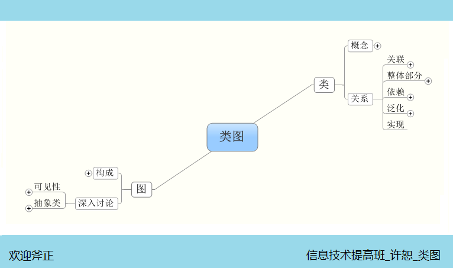
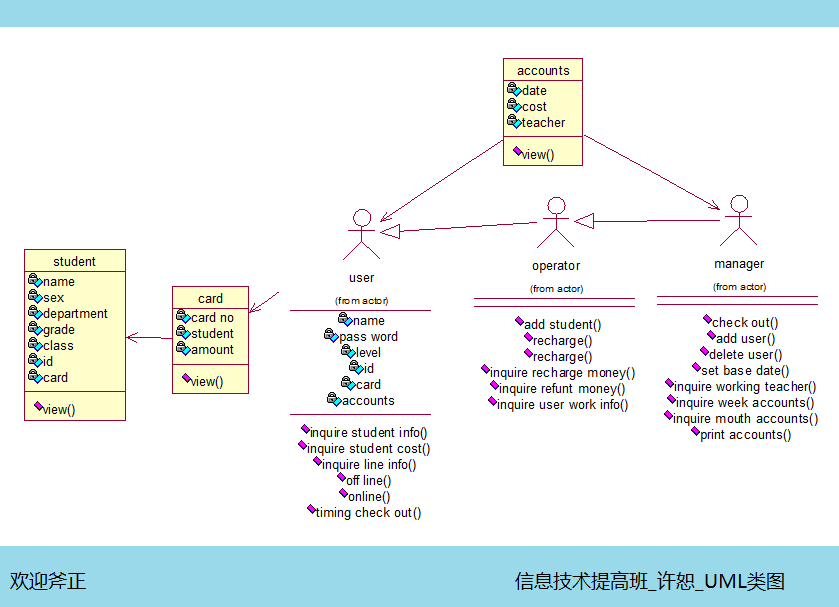

今天用思维导图总结了类图！也初步画出了机房收费系统的类图，其中也纠结了很久，在小学培养的一项能力在这里却有点不够用啊，就是找名词！
刚刚画的时候觉得找名词没有什么难的，事实却不是这样，概览整个系统，搜肠刮肚找不出几个名词，再抽象，找关系，感觉自己就和文字结仇似得！
找到了名词，剩下的就是找关系，众所周知，关系是普遍存在的，这里就涉及到用哪个关系适合，能比较准确地形容这个图形！
经过一段时间的琢磨，今天晒晒我的图！请大家斧正：

